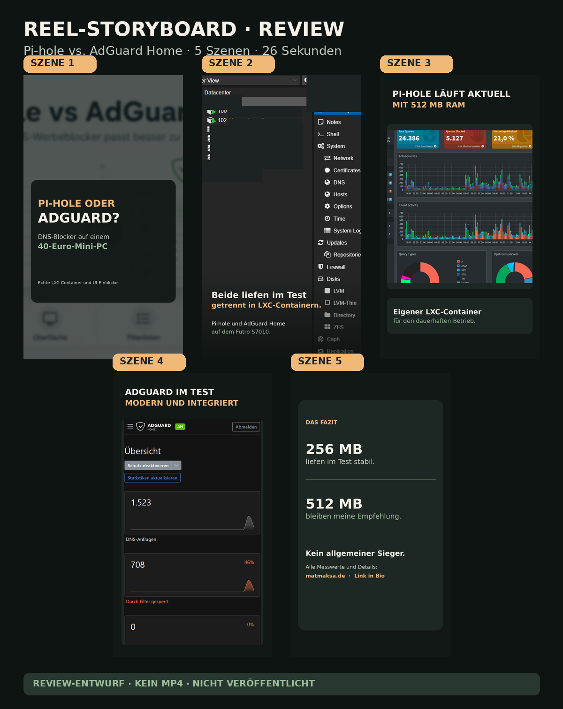
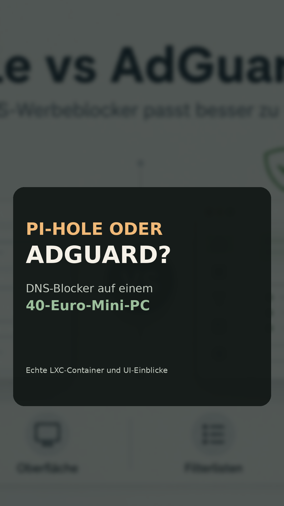
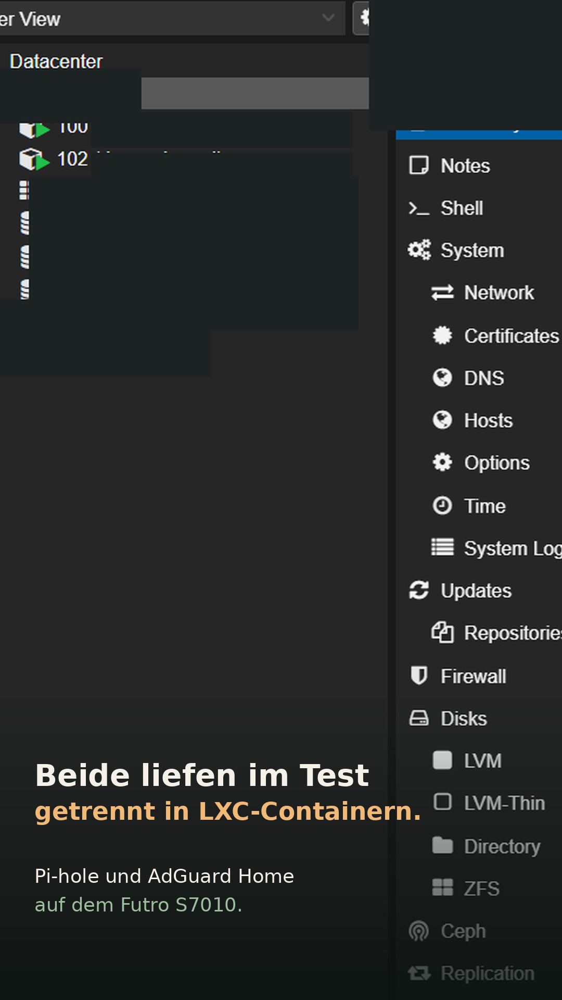
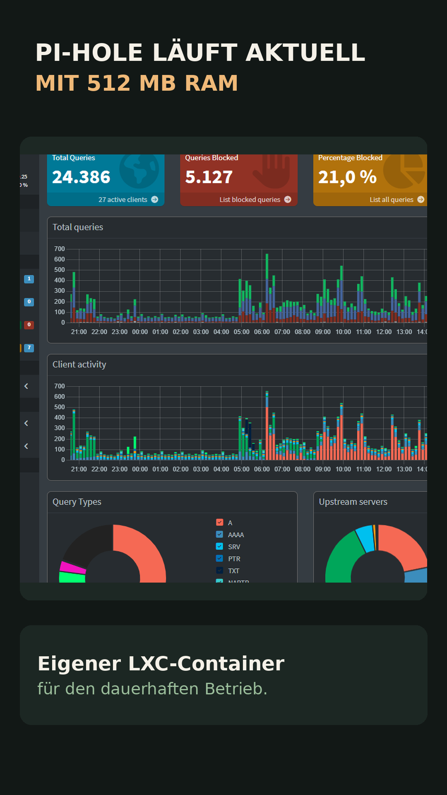
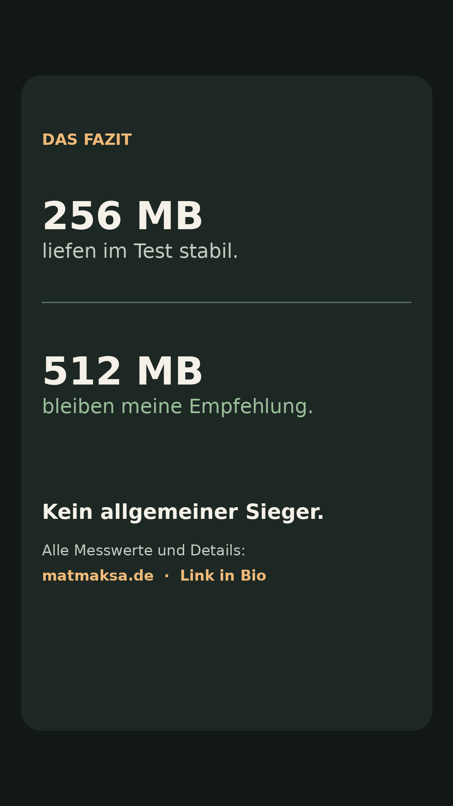

Öffentliche Review-Vorschau · kein MP4 · nicht auf Instagram veröffentlicht
Pi-hole vs. AdGuard Home
Reel-Storyboard · 5 Szenen · 26 Sekunden · Zielartikel: Praxisvergleich lesen
Kontaktbogen

Einzelszenen





Caption-Entwurf
Pi-hole oder AdGuard Home auf einem kleinen Mini-PC? Beide liefen im Test als getrennte LXC-Container sogar mit 256 MB stabil. Heute läuft bei mir Pi-hole mit 512 MB RAM weiter. AdGuard wirkte moderner – einen allgemeinen Sieger gibt es nicht. Alle Messwerte und die Testmethode: Link in Bio auf matmaksa.de. #homelab #proxmox #pihole #adguardhome #dnsblocker #selfhosting #futros7010 #minipc